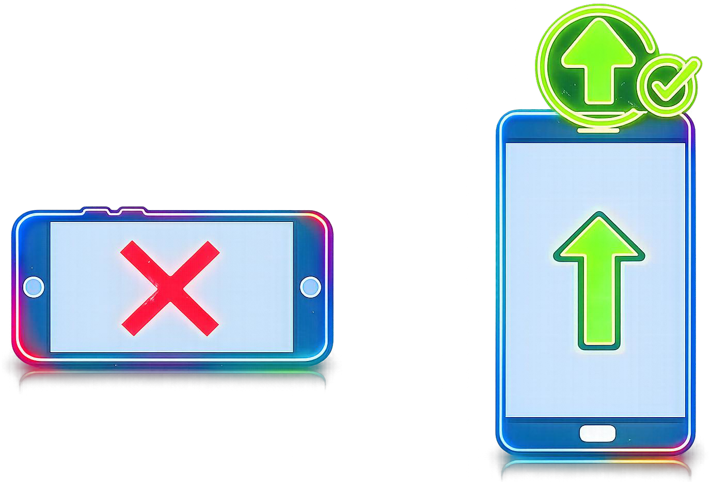
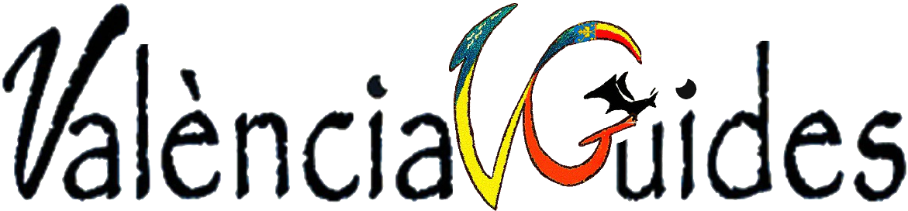

<meta name=\"viewport\" content=\"width=device-width,initial-scale=1\"><title>Sistema UI - Notificaciones</title><style>body{font-family:Arial,sans-serif;font-size:14px;margin:0;padding:8px;}#notificaciones{max-height:100%;overflow-y:auto;} .notif{border-radius:6px;padding:8px;margin-bottom:6px;background:#fff;box-shadow:0 1px 3px rgba(0,0,0,0.1);} .notif.info{border-left:6px solid #2196F3;} .notif.warn{border-left:6px solid #FFC107;} .notif.error{border-left:6px solid #F44336;}</style></head><body><h3>Notificaciones</h3><div id=\"notificaciones\"></div><script>window.addEventListener('message',function(event){try{var data=event.data||{};if(!data||!data.tipo)return;if(data.tipo!=='SISTEMA.NOTIFICACION'&&data.tipo!=='UI.NOTIFICACION')return;var n=document.getElementById('notificaciones');var d=document.createElement('div');d.className='notif '+(data.datos&&data.datos.tipo||'info');var t=data.datos&&data.datos.titulo||'Notificación';var m=data.datos&&data.datos.mensaje||'';d.innerHTML='<strong>'+t+'</strong><div>'+m+'</div><small><em>'+data.origen+'</em></small>';n.insertBefore(d,n.firstChild);}catch(e){console.warn('sistema-ui error parsing message',e);}});</script></body></html>">